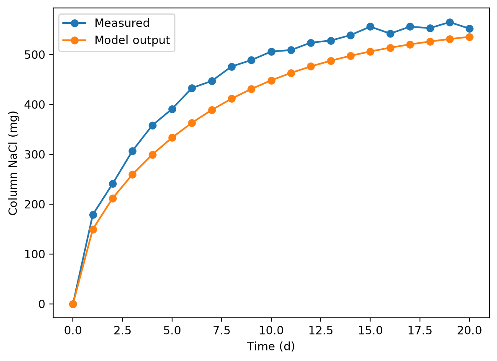

import pandas as pd1D diffusion model solution
Let’s start by looking at the measurement data. We’ll use pandas.
measdat = pd.read_csv('col_salt.csv')
measdat| time_d | salt_mg | |
|---|---|---|
| 0 | 0 | 0 |
| 1 | 1 | 179 |
| 2 | 2 | 241 |
| 3 | 3 | 307 |
| 4 | 4 | 358 |
| 5 | 5 | 391 |
| 6 | 6 | 433 |
| 7 | 7 | 447 |
| 8 | 8 | 476 |
| 9 | 9 | 489 |
| 10 | 10 | 506 |
| 11 | 11 | 509 |
| 12 | 12 | 524 |
| 13 | 13 | 528 |
| 14 | 14 | 539 |
| 15 | 15 | 556 |
| 16 | 16 | 542 |
| 17 | 17 | 556 |
| 18 | 18 | 553 |
| 19 | 19 | 565 |
| 20 | 20 | 552 |
Seems we have even 1 d spacing in time, which is convenient. We can match that exactly without changing the diff1D() function and align model output and measurements without a merge operation.
Load our model function.
import diff_mod as dmAnd other modules.
import numpy as np
import matplotlib.pyplot as pltSo here is our model call.
pred01 = dm.diff1D(
L = 0.1,
n = 50,
D = 1.6E-9,
bc = [36, 0],
ci = 0,
t_eval = np.linspace(0, 20 * 86400, 21)
)And we can use the same approach that was shown in the exercise for calculating accumulation. We will need the cross-sectional area.
area = np.pi * (0.02 / 2)**2
area0.0003141592653589793The numpy.sum() function accepts an axis parameter (second parameter). The help file doesn’t really illuminate how to set it, but with experimentation you can figure out how to add up all the columns, so you have one sum per time.
salt_mod = (pred01['c'] * pred01['dx'] * area).sum(0)
salt_modarray([0. , 0.00014977, 0.000212 , 0.00025964, 0.00029939,
0.00033354, 0.00036318, 0.00038899, 0.0004115 , 0.00043113,
0.00044826, 0.00046321, 0.00047625, 0.00048763, 0.00049756,
0.00050622, 0.00051377, 0.00052037, 0.00052612, 0.00053114,
0.00053552])We should check to make sure that this output array has the same length as the number of times. It does: 21.
Units here are kg, and the measurement data are in mg. And time there is in h.
If we are sure that we used the right times in the model call, we could just add a column with model output. We’ll start with that. First, make a new data frame that will hold measurements and model output.
mmdat = measdat.copy()And add the model output we processed above.
mmdat['salt_mod_mg'] = salt_mod * 1E6
mmdat| time_d | salt_mg | salt_mod_mg | |
|---|---|---|---|
| 0 | 0 | 0 | 0.000000 |
| 1 | 1 | 179 | 149.773978 |
| 2 | 2 | 241 | 212.002236 |
| 3 | 3 | 307 | 259.642982 |
| 4 | 4 | 358 | 299.389395 |
| 5 | 5 | 391 | 333.537495 |
| 6 | 6 | 433 | 363.175828 |
| 7 | 7 | 447 | 388.989435 |
| 8 | 8 | 476 | 411.498665 |
| 9 | 9 | 489 | 431.133657 |
| 10 | 10 | 506 | 448.264052 |
| 11 | 11 | 509 | 463.210089 |
| 12 | 12 | 524 | 476.250485 |
| 13 | 13 | 528 | 487.628038 |
| 14 | 14 | 539 | 497.555009 |
| 15 | 15 | 556 | 506.216288 |
| 16 | 16 | 542 | 513.773309 |
| 17 | 17 | 556 | 520.366726 |
| 18 | 18 | 553 | 526.119486 |
| 19 | 19 | 565 | 531.138819 |
| 20 | 20 | 552 | 535.518175 |
We can already seen the order or magnitude is OK.
But it is safer to do a proper merge. This would work even if we had some times in the model output that were not present in the measurement DataFrame, or vice versa. For that we need to combine model time and our response variable. And it is easiest to merge in a DataFrame, so we’ll do that.
moddat = pd.DataFrame({
'time_d': pred01['t'] / 86400,
'salt_mod_mg': salt_mod * 1E6
})
moddat| time_d | salt_mod_mg | |
|---|---|---|
| 0 | 0.0 | 0.000000 |
| 1 | 1.0 | 149.773978 |
| 2 | 2.0 | 212.002236 |
| 3 | 3.0 | 259.642982 |
| 4 | 4.0 | 299.389395 |
| 5 | 5.0 | 333.537495 |
| 6 | 6.0 | 363.175828 |
| 7 | 7.0 | 388.989435 |
| 8 | 8.0 | 411.498665 |
| 9 | 9.0 | 431.133657 |
| 10 | 10.0 | 448.264052 |
| 11 | 11.0 | 463.210089 |
| 12 | 12.0 | 476.250485 |
| 13 | 13.0 | 487.628038 |
| 14 | 14.0 | 497.555009 |
| 15 | 15.0 | 506.216288 |
| 16 | 16.0 | 513.773309 |
| 17 | 17.0 | 520.366726 |
| 18 | 18.0 | 526.119486 |
| 19 | 19.0 | 531.138819 |
| 20 | 20.0 | 535.518175 |
Now merge.
mmdat2 = pd.merge(measdat, moddat, on = 'time_d')
mmdat2| time_d | salt_mg | salt_mod_mg | |
|---|---|---|---|
| 0 | 0 | 0 | 0.000000 |
| 1 | 1 | 179 | 149.773978 |
| 2 | 2 | 241 | 212.002236 |
| 3 | 3 | 307 | 259.642982 |
| 4 | 4 | 358 | 299.389395 |
| 5 | 5 | 391 | 333.537495 |
| 6 | 6 | 433 | 363.175828 |
| 7 | 7 | 447 | 388.989435 |
| 8 | 8 | 476 | 411.498665 |
| 9 | 9 | 489 | 431.133657 |
| 10 | 10 | 506 | 448.264052 |
| 11 | 11 | 509 | 463.210089 |
| 12 | 12 | 524 | 476.250485 |
| 13 | 13 | 528 | 487.628038 |
| 14 | 14 | 539 | 497.555009 |
| 15 | 15 | 556 | 506.216288 |
| 16 | 16 | 542 | 513.773309 |
| 17 | 17 | 556 | 520.366726 |
| 18 | 18 | 553 | 526.119486 |
| 19 | 19 | 565 | 531.138819 |
| 20 | 20 | 552 | 535.518175 |
Finally, let’s plot the results for comparison.
plt.plot(mmdat2.time_d, mmdat2.salt_mg, marker = 'o', label = 'Measured')
plt.plot(mmdat2.time_d, mmdat2.salt_mod_mg, marker = 'o', label = 'Model output')
plt.xlabel('Time (d)')
plt.ylabel('Column NaCl (mg)')
plt.legend()
Well, clearly the model underestimates NaCl accumulation, even if we consider that there is some random error in measurements (see it?). But measurements and the model both show the same shape and are not terribly far off.
We can get quantitative using the model fit statistics we discussed in class on Thursday. Let’s load the module.
import mod_fit as mfFirst mean bias.
mf.mbe(mmdat.salt_mg, mmdat.salt_mod_mg)np.float64(-42.657897805438154)So that’s a mean bias of under 10% of the maximum. That would not be terrible for an environmental model, but depending on the application, better accuracy might be needed.
Mean absolute error is similar.
mf.mae(mmdat.salt_mg, mmdat.salt_mod_mg)np.float64(42.657897805438154)Not surprising, from looking at the plot, which shows that most of the error is related to bias.